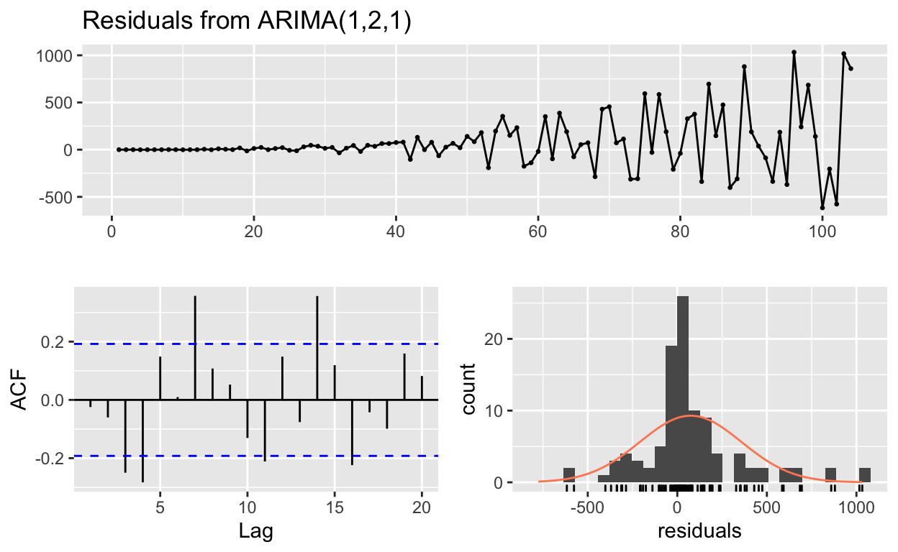
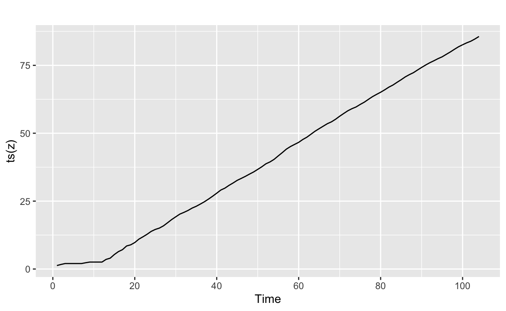
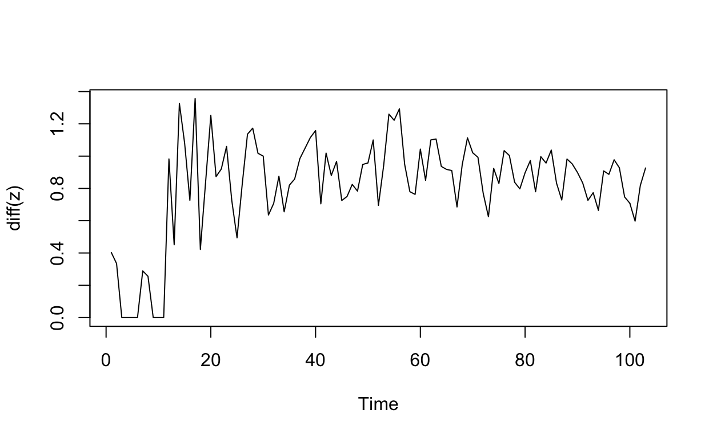
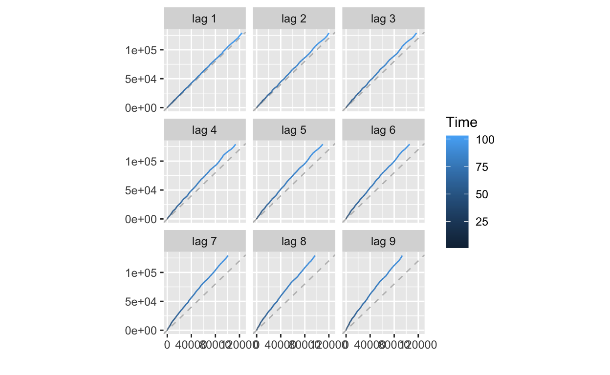
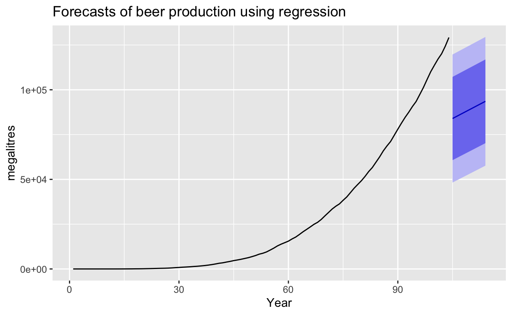
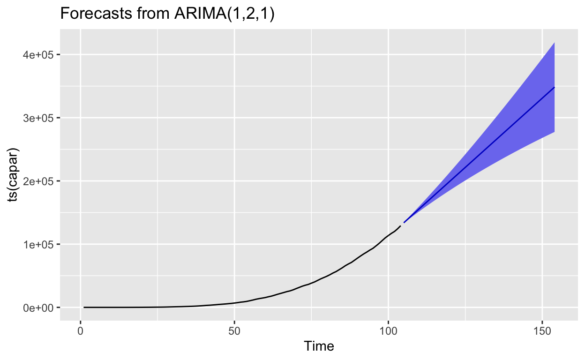
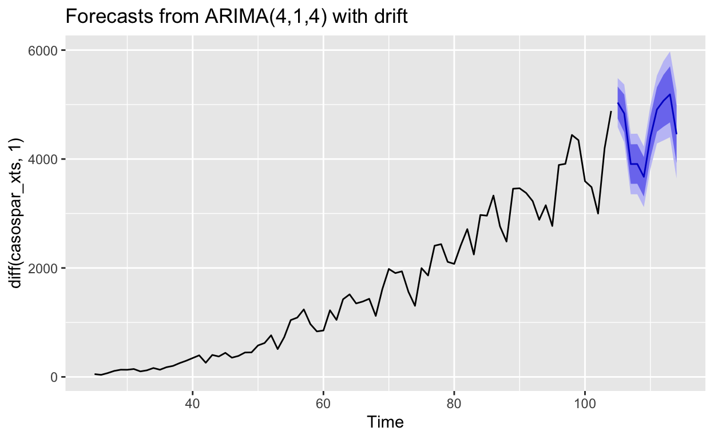

Se presentan los conceptos básicos de series de tiempo, y las su estudñio econométrico
Observamos el comportamiento de los casos totales \(C_t\), ver Figura 1 superior, se podría estar interesado en estudiar el cambio en los casos reportados \(\Delta C_t=C_t-C_{t-1}\), ver Figura 1 inferior, a algún otro comportamento como \(\log(C_t)\) o \(\Delta \log(C_t)\approx \frac{C_t-C_{t-1}}{C_{t-1}}\).
highchart(type = "stock") %>%
hc_yAxis_multiples(
create_yaxis(2, height = c(2, 2))) %>%
hc_add_series(name="Total",casostotales_xts[,1],yAxis=0)%>%
hc_add_series(name="Diferencias",
diff(casostotales_xts[,1],2), yAxis=1)%>%
hc_add_theme(hc_theme_ffx())%>%
hc_title(text = "Casos confirmados para México")%>%
#margin = 20, align = "left",
#style = list(color = "#90ed7d", useHTML = TRUE)) %>%
hc_subtitle(text = "Utilice la herramienta de zoom en la parte
inferior")%>%
hc_tooltip(crosshairs = TRUE, backgroundColor = "#FCFFC5",
shared = TRUE, borderWidth = 5) %>%
#hc_yAxis(title = list(text = "Número de casos confirmados"))%>%
hc_exporting(enabled = TRUE,
filename = "datos",
buttons = list(contextButton = list(menuItems = myMenuItems)))Figure 1: Casos confirmados para México
Una primera observación es que se trabajaran con los datos a partir donde se detectó el primer caso, no tiene sentido trabajar con observaciones nulas, en el sentido que la observación de la variable es cero desde \(-\infty\) hasta el día anterior del primer caso, el primer caso confirmado en México fue el 28 de febrero, la Figura 2 muestra esta ventana de datos para las variables, \(C_t\), \(\Delta C_t\), \(\log(C_t)\), \(\Delta \log(C_t)\).
casospar<-casos_m %>%
group_by(fecha)%>%
summarise(casost=sum(casos))%>%
filter(casost!=0)
casospar_xts<-xts(casospar$casost,
order.by = as.Date(casospar$fecha))
highchart(type = "stock")%>%
hc_yAxis_multiples(
create_yaxis(4, height = c(2,2,2,2))) %>%
hc_add_series(name="Parcial",casospar_xts[,1], yAxis=0)%>%
hc_add_series(name="Diferencias P",
diff(casospar_xts[,1]), yAxis=1)%>%
hc_add_series(name="Logaritmo",
log10(casospar_xts[,1]), yAxis=2)%>%
hc_add_series(name="Diferencias L",
diff(log10(casospar_xts[,1])), yAxis=3)%>%
hc_add_theme(hc_theme_ffx())%>%
hc_title(text = "Casos confirmados para México
desde el primer caso")%>%
#margin = 20, align = "left",
#style = list(color = "#90ed7d", useHTML = TRUE)) %>%
hc_subtitle(text = "Utilice la herramienta de zoom en la
parte inferior")%>%
hc_tooltip(crosshairs = TRUE, backgroundColor = "#FCFFC5",
shared = TRUE, borderWidth = 5) %>%
#hc_yAxis(title = list(text = "Número de casos confirmados"))%>%
hc_exporting(enabled = TRUE,
filename = "datos",
buttons = list(contextButton = list(menuItems = myMenuItems)))Figure 2: Casos confirmados para México
Se trabajará con la variable \(C_t\), pero un procedimiento similar puede aplicarse a las demás variables en caso que se desee.
Lo primero que se quisiera responder, es si existe una relación entre \(C_t\) y \(C_{t-1},C_{t-2},\dots,C_{t-k},\). Para ello calculamos la fución de autocorrelación, donde \(r_k\) mide la relacion entre \(C_t\) y \(C_{t-k}\)
\[r_{k} = \frac{\sum\limits_{t=k+1}^T (C_{t}-\bar{C})(C_{t-k}-\bar{C})} {\sum\limits_{t=1}^T (C_{t}-\bar{C})^2},\]
aquí \(T\) denota el número de datos, la Figura 3 muestra la gráfica de \(r_k\) vs \(k\) para \(k\in\{1,2,\ldots,20 \}\), claramente \(r_0=1\)
capar<-casospar$casost
ggAcf(capar) +
ggtitle("Función de autocorrelación C_t")+
labs(y = "r_k",x="k (retrasos)")Figure 3: Función de autocorrelación
Observamos una dependencia entre \(C_t\) y sus valores anteriores, esta dependencia va dismunuyendo conforme \(k\) aumenta, una herramienta visual para corroborar esta situaciónes es gráficar \(C_t\) vs \(C_{t-k}\) para diferentes valores de \(k\), la Figura 4 muestra dichas gráficas.
gglagplot(capar) +
ggtitle("Grafias de C_t vs C_{t-k}")+
labs(y = "C_t",x="C_{t-k}")Figure 4: Grafias de C_t vs C_{t-k}
Entonces probablemente la variable \(C_t\) se pueda escribir como un modelo autorregresivo de orden \(p\), AR(p), es decir
\[C_t=\beta_0+\beta_1 C_{t-1}+\beta_{t-2}C_{t-2}+\dots+\beta_{t-p}C_{t-p}+\varepsilon_t\] suponiendo \(\mathbb{E}(\varepsilon_t|C_{t-1},C_{t-2},\dots)=0\). Con base en los resultados obtenidos de autocorrelación se realizan las regresiones para 1, 2 y 3 retardos.
capar_AR1<-lm(capar~lag(capar))
capar_AR2<-lm(capar~lag(capar)+lag(capar,2))
capar_AR3<-lm(capar~lag(capar)+lag(capar,2)+lag(capar,3))
summary(capar_AR1)
Call:
lm(formula = capar ~ lag(capar))
Residuals:
Min 1Q Median 3Q Max
-1549.61 -244.01 -49.42 227.57 775.81
Coefficients:
Estimate Std. Error t value Pr(>|t|)
(Intercept) 2.671e+02 4.605e+01 5.799 7.66e-08 ***
lag(capar) 1.037e+00 1.037e-03 999.693 < 2e-16 ***
---
Signif. codes: 0 '***' 0.001 '**' 0.01 '*' 0.05 '.' 0.1 ' ' 1
Residual standard error: 371.1 on 101 degrees of freedom
(1 observation deleted due to missingness)
Multiple R-squared: 0.9999, Adjusted R-squared: 0.9999
F-statistic: 9.994e+05 on 1 and 101 DF, p-value: < 2.2e-16
summary(capar_AR2)
Call:
lm(formula = capar ~ lag(capar) + lag(capar, 2))
Residuals:
Min 1Q Median 3Q Max
-924.42 -96.03 -51.61 92.92 781.61
Coefficients:
Estimate Std. Error t value Pr(>|t|)
(Intercept) 95.94929 40.24815 2.384 0.019 *
lag(capar) 1.69804 0.07505 22.627 < 2e-16 ***
lag(capar, 2) -0.68576 0.07779 -8.816 4.17e-14 ***
---
Signif. codes: 0 '***' 0.001 '**' 0.01 '*' 0.05 '.' 0.1 ' ' 1
Residual standard error: 279.8 on 99 degrees of freedom
(2 observations deleted due to missingness)
Multiple R-squared: 0.9999, Adjusted R-squared: 0.9999
F-statistic: 8.737e+05 on 2 and 99 DF, p-value: < 2.2e-16
summary(capar_AR3)
Call:
lm(formula = capar ~ lag(capar) + lag(capar, 2) + lag(capar,
3))
Residuals:
Min 1Q Median 3Q Max
-924.29 -97.43 -52.71 94.57 778.95
Coefficients:
Estimate Std. Error t value Pr(>|t|)
(Intercept) 97.344894 41.836000 2.327 0.022055 *
lag(capar) 1.690802 0.102541 16.489 < 2e-16 ***
lag(capar, 2) -0.670247 0.191431 -3.501 0.000702 ***
lag(capar, 3) -0.008327 0.106918 -0.078 0.938084
---
Signif. codes: 0 '***' 0.001 '**' 0.01 '*' 0.05 '.' 0.1 ' ' 1
Residual standard error: 282.5 on 97 degrees of freedom
(3 observations deleted due to missingness)
Multiple R-squared: 0.9999, Adjusted R-squared: 0.9999
F-statistic: 5.68e+05 on 3 and 97 DF, p-value: < 2.2e-16Observamos que los 3 modelos tiene \(R^2\) y \(R^2\)-ajustada bastante alta, tenemos que los coeficientes en los dos primeros modelos por separado y conjuntamete son estadisticamente significativos, en el tercero uno de los coeficientes no es significativo, pero esto no interfiere en la predicción que pueda hacerse (Hyndman and Athanasopoulos 2018), entonces se aplica un criterio para elegir uno de estos modelos, se utiliza el criterio de información de Bayes1 (BIC) (Stock and Watson 2012), el cual se define como:
\[BIC(p)=\ln\left(\frac{SR(p)}{T}\right)+\frac{p+1}{T}\ln(T)\] aquí \(SR(p)\) es la suma de los cuadrados de los residuos del modelo AR(p) estimado, se elige el modelo que presente menor BIC
a<-log(sum(capar_AR1$residuals^2)/length(capar))+(2)*
log(length(capar))/length(capar)
b<-log(sum(capar_AR2$residuals^2)/length(capar))+(3)*
log(length(capar))/length(capar)
c<-log(sum(capar_AR3$residuals^2)/length(capar))+(4)*
log(length(capar))/length(capar)
c(a,b,c)
[1] 11.89291 11.35296 11.39635Se elege AR(2), así el modelo estimado es
\[\hat{C}_t=95.949+1.698 C_{t-1}-0.685C_{t-2}\]
La Figura 5 muestra los estimados con el modolo AR(2) y la Figura ?? muestra la misma información pero en escala logaritmica.
autoplot(ts(capar), series="Casos observados") +
autolayer(ts(fitted(capar_AR2)),series="Casos ajustados AR(2)") +
xlab("días") + ylab("") +
ggtitle("Casos observados y casos estimados AR(2)")Figure 5: Casos observados y casos estimados AR
autoplot(ts(log10(capar)), series="Casos observados") +
autolayer(ts(log10(fitted(capar_AR2))),series="Casos ajustados AR(2)") +
xlab("días") + ylab("") +
ggtitle("Casos observados y casos estimados AR(2)")Figure 6: Casos observados y casos estimado AR logaritmo
Si la serie presenta una raíz unitaria, es decir, \(z=1\) es una solución de la ecuación
\[1-\beta_1z-\beta_2z^2-\dots+\beta_pz^p=0\] entonces se presenta una tendencia estocastica lo cual implica que los coeficientes y los estadisticos \(t\) de la regresiones previamente realizados no tienen buenas caracteristicas (los coeficientes son sesgados y el estadistico no se distribuye de forma normal). Para revisar si es esta en este caso, se realiza el contraste de de Dickey-Fuller aumentado para raíz aumentada autoregresiva (Stock and Watson 2012), para ello se estima el siguiente modelo2
\[\begin{equation} \Delta C_t=\beta_0+\delta C_{t-1} + \gamma_1\Delta C_{t-1}+\gamma_2 C _{t-2}+\dots+\gamma_p \Delta C_{t-p+1}+u_t \tag{1} \end{equation}\]
donde \[H_0:\delta=0\;\;\text{vs}\;\;H_1:\delta<0 \]
bajo la hipotesis nula \(C_t\) tiene tendencia estocástica, bajo la hipotesis alternatica \(C_t\) es estacionaria. Para calcular esta regresión se tiene que porponer un orden \(p\), la instrucción urca::ur.df nos proporciona un criterio de selección y nos permite configurar la regresión como en la ecuación (1)
a<-ur.df(capar, selectlags = "BIC", type="drift")
summary(a)
###############################################
# Augmented Dickey-Fuller Test Unit Root Test #
###############################################
Test regression drift
Call:
lm(formula = z.diff ~ z.lag.1 + 1 + z.diff.lag)
Residuals:
Min 1Q Median 3Q Max
-924.42 -96.03 -51.61 92.92 781.61
Coefficients:
Estimate Std. Error t value Pr(>|t|)
(Intercept) 95.949289 40.248151 2.384 0.019 *
z.lag.1 0.012282 0.002857 4.298 4.03e-05 ***
z.diff.lag 0.685760 0.077789 8.816 4.17e-14 ***
---
Signif. codes: 0 '***' 0.001 '**' 0.01 '*' 0.05 '.' 0.1 ' ' 1
Residual standard error: 279.8 on 99 degrees of freedom
Multiple R-squared: 0.9578, Adjusted R-squared: 0.9569
F-statistic: 1123 on 2 and 99 DF, p-value: < 2.2e-16
Value of test-statistic is: 4.2984 9.764
Critical values for test statistics:
1pct 5pct 10pct
tau2 -3.46 -2.88 -2.57
phi1 6.52 4.63 3.81así se tiene que no se puede rechazar a favor que la serie sea estacionaria pues el es estadístico \(t\) para \(\delta\), que el coeficiente de z.lag.1, es positivo y a la linea tau2 indica los valores criticos y los porcentajes de significacncial. Repetimos el calculo con una regresión a mano y observamos que es lo mismo, en este caso el estadistico que nos interesa es el asociado a la variable lag(capar)[-1].
capar_adf<-lm(diff(capar)~lag(capar)[-1]+diff(lag(capar)))
summary(capar_adf)
Call:
lm(formula = diff(capar) ~ lag(capar)[-1] + diff(lag(capar)))
Residuals:
Min 1Q Median 3Q Max
-924.42 -96.03 -51.61 92.92 781.61
Coefficients:
Estimate Std. Error t value Pr(>|t|)
(Intercept) 95.949289 40.248151 2.384 0.019 *
lag(capar)[-1] 0.012282 0.002857 4.298 4.03e-05 ***
diff(lag(capar)) 0.685760 0.077789 8.816 4.17e-14 ***
---
Signif. codes: 0 '***' 0.001 '**' 0.01 '*' 0.05 '.' 0.1 ' ' 1
Residual standard error: 279.8 on 99 degrees of freedom
(1 observation deleted due to missingness)
Multiple R-squared: 0.9578, Adjusted R-squared: 0.9569
F-statistic: 1123 on 2 and 99 DF, p-value: < 2.2e-16Si la hipotesis alternativa es que \(C_t\) es estacionaria en torno a una tendencia temporal lineal determinística, entonces la regresión de Dickey-Fuller se escribe como
\[\begin{equation} \Delta C_t=\beta_0+\alpha t+\delta C_{t-1} + \gamma_1\Delta C_{t-1}+\gamma_2 C _{t-2}+\dots+\gamma_p \Delta C_{t-p+1}+u_t \tag{2} \end{equation}\]
Calculamos la regresión de la ecuación (2), además para comprabar se utiliza la instrucción tseries::adf.test que tiene por defecto la estimación temporal.
capar_adft<-lm(diff(capar)~lag(capar)[-1]+diff(lag(capar))+c(1:(length(capar)-1)))
summary(capar_adft)
Call:
lm(formula = diff(capar) ~ lag(capar)[-1] + diff(lag(capar)) +
c(1:(length(capar) - 1)))
Residuals:
Min 1Q Median 3Q Max
-977.43 -114.94 -22.87 113.96 680.93
Coefficients:
Estimate Std. Error t value Pr(>|t|)
(Intercept) -1.548e+02 7.275e+01 -2.128 0.035828 *
lag(capar)[-1] 1.378e-02 2.687e-03 5.128 1.47e-06 ***
diff(lag(capar)) 4.441e-01 9.411e-02 4.720 7.87e-06 ***
c(1:(length(capar) - 1)) 9.608e+00 2.389e+00 4.022 0.000114 ***
---
Signif. codes: 0 '***' 0.001 '**' 0.01 '*' 0.05 '.' 0.1 ' ' 1
Residual standard error: 260.6 on 98 degrees of freedom
(1 observation deleted due to missingness)
Multiple R-squared: 0.9638, Adjusted R-squared: 0.9626
F-statistic: 868.5 on 3 and 98 DF, p-value: < 2.2e-16
adf.test(capar, k=1)
Augmented Dickey-Fuller Test
data: capar
Dickey-Fuller = 5.1284, Lag order = 1, p-value = 0.99
alternative hypothesis: stationaryEl estadistico es \(5.1284\) no se puede rechazar en favor de una \(C_t\) estacionaria con tendencia temporal lineal determinística. Ahora no se puede asegurar que exista raíz unitaria, pero se tiene un \(r_1\) parecido a la unidad, entonces se recomienda trabajar con las diferencias de \(C_t\) (Stock and Watson 2012)-(Wooldridge 2010)-(Holmes, M. D, and Ward 2020), es decir, con \(\Delta C_t=C_t-C_{t-1}\) o con las segundas diferencias $\(\Delta^2 C_t=C_t-2C_{t-1}+C_{t-2}\), de tal forma que al aplicar la preba de Dickey-Fuller la a la serie resultante se rechaze al hipotesis nula a favor de una serie estacionaria. Existen varias formas de abordar este problema, se ha elegido utilizar la instrucción forecast::ndiffs que calcula la cantidad de diferencias necesarias, una vez que se tiene este numero se aplica la prueba mencionada para verificar dicha situación.
ndiffs(capar, test = "adf")
[1] 2
a<-ur.df(diff(diff(capar)), selectlags = "BIC", type="drift")
summary(a)
###############################################
# Augmented Dickey-Fuller Test Unit Root Test #
###############################################
Test regression drift
Call:
lm(formula = z.diff ~ z.lag.1 + 1 + z.diff.lag)
Residuals:
Min 1Q Median 3Q Max
-781.55 -76.03 -45.00 63.38 1039.75
Coefficients:
Estimate Std. Error t value Pr(>|t|)
(Intercept) 59.44891 30.95677 1.920 0.0577 .
z.lag.1 -1.27930 0.17658 -7.245 1.04e-10 ***
z.diff.lag 0.09218 0.11536 0.799 0.4262
---
Signif. codes: 0 '***' 0.001 '**' 0.01 '*' 0.05 '.' 0.1 ' ' 1
Residual standard error: 303 on 97 degrees of freedom
Multiple R-squared: 0.5736, Adjusted R-squared: 0.5648
F-statistic: 65.24 on 2 and 97 DF, p-value: < 2.2e-16
Value of test-statistic is: -7.2447 26.3483
Critical values for test statistics:
1pct 5pct 10pct
tau2 -3.46 -2.88 -2.57
phi1 6.52 4.63 3.81En este caso se aplico la prueba sin el factor de tendencia, pues las primeras diferencias eliminan la tendencia lineal determinista (???)-(Wooldridge 2010) y se comprueba el resultado,
capardd1<-diff(capar)
capardd2<-diff(diff(capar))
ggAcf(capardd2) +
ggtitle("Función de autocorrelación C_t")+
labs(y = "r_k",x="k (retrasos)")Figure 7: Función de autocorrelación
fit<-auto.arima(capar)
residuals(fit)
Time Series:
Start = 1
End = 104
Frequency = 1
[1] 1.341641e-03 -1.788850e-03 -9.254166e-07 -9.841584e-01
[5] -2.264694e-01 -1.517980e-01 -1.023262e-01 9.301660e-01
[9] 2.015970e-01 -8.633790e-01 -1.567594e-01 -1.061619e-01
[13] 4.928032e+00 -8.018568e-01 9.312699e+00 4.456235e+00
[17] 1.623575e-01 1.796577e+01 -1.310634e+01 1.282550e+01
[21] 2.369592e+01 6.302333e-02 1.203804e+01 2.130211e+01
[25] -6.846656e+00 -1.164649e+01 2.967471e+01 4.640544e+01
[29] 3.631378e+01 1.418110e+01 2.403267e+01 -3.371355e+01
[33] 1.599398e+01 4.427446e+01 -1.898533e+01 4.640650e+01
[37] 3.574705e+01 6.494145e+01 6.516111e+01 7.573314e+01
[41] 7.989815e+01 -1.032809e+02 1.312440e+02 -3.001410e-01
[45] 7.877812e+01 -6.431393e+01 2.652439e+01 6.727174e+01
[49] 2.060451e+01 1.410995e+02 8.479353e+01 1.806021e+02
[53] -1.914423e+02 1.965981e+02 3.538707e+02 1.513112e+02
[57] 2.327983e+02 -1.755135e+02 -1.387670e+02 -1.921839e+01
[61] 3.507091e+02 -9.722084e+01 3.874647e+02 1.906781e+02
[65] -7.536672e+01 5.398728e+01 7.301635e+01 -2.863698e+02
[69] 4.294067e+02 4.545874e+02 7.227938e+01 1.134753e+02
[73] -3.128370e+02 -3.079891e+02 5.933733e+02 -2.922434e+01
[77] 5.849741e+02 1.901335e+02 -2.082054e+02 -3.894612e+01
[81] 3.284546e+02 3.763994e+02 -3.380116e+02 6.950440e+02
[85] 1.475156e+02 4.744740e+02 -4.015399e+02 -3.091925e+02
[89] 8.799723e+02 1.889289e+02 3.853692e+01 -8.709918e+01
[93] -3.368056e+02 1.852283e+02 -3.697975e+02 1.032572e+03
[97] 2.410971e+02 6.843073e+02 1.406856e+02 -6.166355e+02
[101] -2.044286e+02 -5.768162e+02 1.016862e+03 8.592243e+02
fitted(fit)
Time Series:
Start = 1
End = 104
Frequency = 1
[1] 2.998658e+00 4.001789e+00 5.000001e+00 5.984158e+00 5.226469e+00
[6] 5.151798e+00 5.102326e+00 5.069834e+00 6.798403e+00 7.863379e+00
[11] 7.156759e+00 7.106162e+00 7.071968e+00 1.580186e+01 1.768730e+01
[16] 3.654377e+01 5.283764e+01 6.403423e+01 1.061063e+02 1.051745e+02
[21] 1.403041e+02 2.029370e+02 2.389620e+02 2.946979e+02 3.738467e+02
[26] 4.166465e+02 4.453253e+02 5.385946e+02 6.806862e+02 8.338189e+02
[31] 9.689673e+02 1.127714e+03 1.199006e+03 1.333726e+03 1.528985e+03
[36] 1.641594e+03 1.854253e+03 2.078059e+03 2.373839e+03 2.709267e+03
[41] 3.101102e+03 3.544281e+03 3.712756e+03 4.219300e+03 4.582222e+03
[46] 5.078314e+03 5.372476e+03 5.779728e+03 6.276395e+03 6.733901e+03
[51] 7.412206e+03 8.080398e+03 8.963442e+03 9.304402e+03 1.019013e+04
[56] 1.148169e+04 1.263920e+04 1.401751e+04 1.481577e+04 1.554822e+04
[61] 1.640129e+04 1.789622e+04 1.883654e+04 2.054832e+04 2.216337e+04
[66] 2.341701e+04 2.483198e+04 2.631137e+04 2.720459e+04 2.916141e+04
[71] 3.144972e+04 3.334652e+04 3.533484e+04 3.663499e+04 3.773063e+04
[76] 4.021522e+04 4.201003e+04 4.484187e+04 4.735221e+04 4.925795e+04
[81] 5.130455e+04 5.396960e+04 5.693201e+04 5.887196e+04 6.237948e+04
[86] 6.538153e+04 6.902154e+04 7.141419e+04 7.368003e+04 7.783407e+04
[91] 8.136146e+04 8.471410e+04 8.784881e+04 9.047877e+04 9.380480e+04
[96] 9.629343e+04 1.009969e+05 1.049957e+05 1.098853e+05 1.142356e+05
[101] 1.173074e+05 1.206788e+05 1.232841e+05 1.283248e+05
checkresiduals(fit)
Ljung-Box test
data: Residuals from ARIMA(1,2,1)
Q* = 36.721, df = 8, p-value = 1.295e-05
Model df: 2. Total lags used: 10
checkresiduals(fit,plot=FALSE)
Ljung-Box test
data: Residuals from ARIMA(1,2,1)
Q* = 36.721, df = 8, p-value = 1.295e-05
Model df: 2. Total lags used: 10
z<-BoxCox(capar,0.2706504)
autoplot(ts(z))
a<-ur.df(diff(z), selectlags = "BIC", type="drift")
summary(a)
###############################################
# Augmented Dickey-Fuller Test Unit Root Test #
###############################################
Test regression drift
Call:
lm(formula = z.diff ~ z.lag.1 + 1 + z.diff.lag)
Residuals:
Min 1Q Median 3Q Max
-0.61329 -0.14817 0.01259 0.14095 0.74383
Coefficients:
Estimate Std. Error t value Pr(>|t|)
(Intercept) 0.23877 0.07119 3.354 0.001133 **
z.lag.1 -0.28195 0.08232 -3.425 0.000899 ***
z.diff.lag -0.28177 0.09554 -2.949 0.003985 **
---
Signif. codes: 0 '***' 0.001 '**' 0.01 '*' 0.05 '.' 0.1 ' ' 1
Residual standard error: 0.2273 on 98 degrees of freedom
Multiple R-squared: 0.2637, Adjusted R-squared: 0.2487
F-statistic: 17.55 on 2 and 98 DF, p-value: 3.058e-07
Value of test-statistic is: -3.425 5.9216
Critical values for test statistics:
1pct 5pct 10pct
tau2 -3.46 -2.88 -2.57
phi1 6.52 4.63 3.81
plot.ts(diff(z))
ndiffs(capar,test="pp",max.d=5)
[1] 2
a<-auto.arima(casospar_xts)
forecast(a,10)
Point Forecast Lo 80 Hi 80 Lo 95 Hi 95
105 133777.7 133396.4 134159.1 133194.6 134360.9
106 138247.7 137478.9 139016.5 137072.0 139423.4
107 142664.7 141471.1 143858.3 140839.2 144490.2
108 147059.0 145407.7 148710.4 144533.5 149584.6
109 151443.7 149303.2 153584.2 148170.1 154717.3
110 155824.2 153164.1 158484.2 151756.0 159892.4
111 160202.9 156993.6 163412.2 155294.7 165111.1
112 164580.8 160793.6 168368.1 158788.7 170373.0
113 168958.5 164565.3 173351.6 162239.7 175677.2
114 173336.0 168310.0 178361.9 165649.4 181022.5
hchart(forecast(a,10))
gglagplot(casospar_xts)
#y <- ts(casospar)
#fit <- tslm(y~lag(y))
#plot(forecast(fit, h=20))
f <- tslm(ts(capar) ~ trend )
fcast <- forecast(f)
autoplot(fcast) +
ggtitle("Forecasts of beer production using regression") +
xlab("Year") + ylab("megalitres")
arima1<-auto.arima(ts(capar))
forecast1<-forecast(arima1,level = c(95), h = 50)
autoplot(forecast1)
fit <- auto.arima(diff(casospar_xts,1), seasonal=FALSE)
fit
Series: diff(casospar_xts, 1)
ARIMA(4,1,4) with drift
Coefficients:
ar1 ar2 ar3 ar4 ma1 ma2 ma3
-0.4688 0.2940 -0.3646 -0.8804 0.0995 -0.7426 0.0684
s.e. 0.0891 0.1336 0.1058 0.0688 0.1344 0.1668 0.1150
ma4 drift
0.6034 41.7346
s.e. 0.1048 9.3056
sigma^2 estimated as 52557: log likelihood=-696.66
AIC=1413.33 AICc=1415.75 BIC=1439.58
fit %>% forecast(h=10) %>% autoplot(include=80)
x <- forecast(ets(diff(casostotales$casost)), h = 30, level = 95)
hchart(x)
model <- HoltWinters(diff(casostotales$casost,2), gamma=FALSE)
predict(model, 9, prediction.interval = TRUE, level= 0.99)
Time Series:
Start = 139
End = 147
Frequency = 1
fit upr lwr
139 10966 11885.66 10046.34
140 12850 14906.42 10793.58
141 14734 18175.05 11292.95
142 16618 21655.17 11580.83
143 18502 25322.37 11681.63
144 20386 29158.98 11613.02
145 22270 33151.54 11388.46
146 24154 37289.34 11018.66
147 26038 41563.61 10512.39Se definiran los conceptos de series tiempo y se aplicaran a las mediciones de Casos Confirmados Acumulalados, tomamos el conjunto de cada uno de estos valores como \[\left\{C_t: t=1,\dots 140\right\}\]
Colección de observaciones, igualmente espaciados.
\[\{X_t\}_{t\in\mathbb{N}}\]
donde \(X_t:\Omega\rightarrow\mathbb{R}\) es una variable aleatoria, uan serie de tiempoes una realización de todas las posibles,
\[\mathbb{E}(X_t)=\frac{1}{T}\sum_t X_t\] Propiedad de ergodicidad.
Propiedad de estacionariedad
orden (1) \(\forall t,s\) \(X_t=X_s\)
orden (2) \(\forall t,s\) \((X_t,X_s)=(X_{t+h},X_{s+h}\)
Orden 1 media, varianza y predicción
Estacinaonalidad (debil de segundo orden)
Esto determina el mejor predictor lineal.
Función de autocorrelación
\[\begin{equation} \rho(h)=\frac{\gamma(h)}{\gamma(0)} \end{equation}\]
Solo pintamos el lado derecho
\[\rho(0)=1\]
La evalaución nos da un aidea del poder predictivo para diferentes intervalos de tiempo, si lo vemos hacia el futuro. Hacia el pasado le llamas memoria.
\(\{\epsilon_t\}\) estacionario con \(\mathbb{E}(\epsilon_t)=0\) \(\mathbb{V}ar(\epsilon_t)=\sigma^2\)
\[ \rho(h)=\begin{cases} 1&\text{ si } h=0\\ 0&\text{otro caso} \end{cases} \]
Sea \(\{\epsilon_t\}\) \(RB(0,\sigma^2)\), y definimos
\[X_t = \varepsilon_t + \theta\varepsilon_{t-1}\]
entonces
(X_t,X_{t+h})= \[\begin{cases} \theta\sigma^2&\text{ si } h=1\\ 0&\text{otro caso} \end{cases}\]Trabajo final, normalmente
Reflexionar sobre la técnica ecónometricas, discusión sobre como se estima o como se puede estimar, toda tecnica econometrica la matriz robusta, etc, EL INTERES DE COMO SE HIZO LA ECONOMETRIA Y PORQUE ASÍ ORIENTADO A LO TÉCNICO
\[\begin{equation} 1 + c + c^2 + c^3 + \cdots = \frac{1}{1 -c } \tag{3} \end{equation}\]
To prove key formula (3)
el teorema 1
Holmes, E. E., Scheuerell M. D, and E. J. Ward. 2020. Applied Time Series Analysis for Fisheries and Enviromental Data. Northwet Fisheries Science Center, 2275, Montlake BlvdE., Seatle, WA 98112. https://nwfsc-timeseries.github.io/atsa-labs/.
Hyndman, Rob J, and George Athanasopoulos. 2018. Forecasting: Principles and Practice. 2nd ed. Melbourn, Australia: OTexts. https://otexts.com/fpp2/.
Stock, James H., and Mark M. Watson. 2012. Introducción a La Econometría. 3rd ed. Melbourn, Australia: PEARSON.
Wooldridge, Jeffrey M. 2010. Introducción a La Econometría. 4th ed. México: CENGAGE.